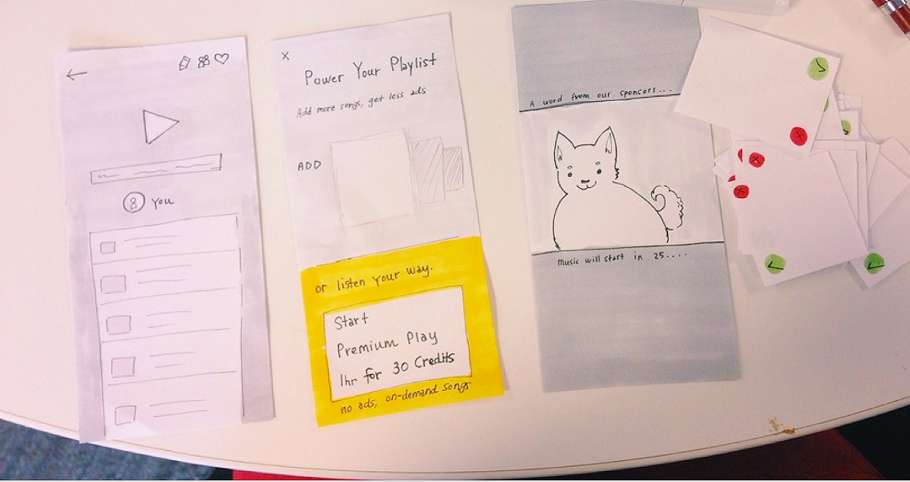

"Napster X"
At Napster, I was on the product team defining a new music streaming product with the working title “Napster X.” The objective was to create a music app that was:
- social,
- would appeal to a younger demographic, and
- have a monetization strategy that users would find appealing, which was NOT a monthly subscription model.
Process
I created and owned a user testing process for vetting concepts and features via in-person studies, remote testing, and surveys. We surveyed thousands of people and talked weekly face-to-face with over a hundred people in our target demographic.

A guerilla testing session that included a high-fidelity prototype and a card sort activity
When anyone on our team had an idea for an app feature, we brainstormed concepts together. After I created initial sketches, we proposed questions to investigate about the concept, as well as hypotheses that to target for user testing.

Initial whiteboard sketches, questions, and hypothesis for a "tour guide" feature
We tested hypotheses with surveys or guerilla testing at a nearby university. Prototypes could be low- or high-fidelity, and I created them using paper and pencil, Proto.io, Sketch, and/or Pixate. To challenge our assumptions and firm up our knowledge on topics we knew little about, we also used interviews, card sorts, and contextual inquiries. A paper prototype for a playlist maker design
Prototype screens for a playlist maker design
After user research of any kind was completed, I summarized research findings and design recommendations for company-wide distribution. Once iterations provided a design that was considered the best for reaching our goals and KPIs "in the wild," I defined technical requirements for features to hand off to development.Microtransactions
With routine and thorough user testing, I cracked one of the major design problems of the Napster X product: microtransactions. Rather than paying a monthly subscription to an app, users would use credits to listen to music. We iterated through various designs and presensations for microtransactions, and turned a system that users hated into one that they were excited to interact with.

A card sort relating to microtransactions
Participant Feedback
While iterating on microtransactions design“I don’t really like the credit aspect. SoundCloud is great because it doesn’t charge you to play music.”
“[If I saw this design, my reaction would be:] No thanks, then remove the app, then go back to Spotify. I’m not interested in the whole idea of credits. I can already listen to free music and make playlists from different apps so I’m not sure why I would stay.”
“If you had to constantly change the song, or decide what credits to use, that would get in the way. Managing credits gets in the way of the music.”With improved microtransactions design
“It is free and you can earn credits to skip ads. It is perfect for someone who doesn't have a lot of money.”
“I hate ads and I like having the ability to not listen to them without having to pay each month for that privilege.”
“[The way credits work in this app] seems a more comprehensive and convenient plan compared to the alternatives.”
“The idea of earning credits sounds kind of fun....I think the concept [credits in this app] is really cool.”